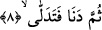
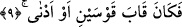

7. Kendisi en yüksek ufukta iken.
Ufuk, göğün görülen kısmı ile görünmeyen kısmını birbirinden ayıran dâire şeklindeki
yerdir. Ufk-ı ednâ/en alt ufuk nasıl ki güneşin batış tarafında ise, ufk-ı a’la/en üst ufuk
da onun doğuş tarafındadır. Bu takdirde âyetin mânâsı: “Cibrîl (a.s.) güneşin doğuş
anındaki dünyanın en uç bölgesinde bulunan güneş ufkunda iken” şeklindedir. Cibrîl,
gökten daha yüksekte bir yerdeydi; yâni güneşin doğuş yerine yakındı.
Bundan da anlaşılacağı üzere güneşin doğuş ve batış yerleri, -daha önce açıklanan
dünyanın küre gibi olduğu varsayılsa da- bir adamın başı ile ayakları mesâbesindedir.
Aynı şekilde insanın rûhu ile bedeni de böyledir. Zîra ruh ulvî, beden ise süflîdir. Bu
sûretle ruh âlem-i ervâhta doğup bedenler âleminde batmaktadır.
8. Sonra (Muhammed’e) yaklaştı, derken daha da yaklaştı.
“Sonra yaklaştı.” Yâni Rasûlullah (s.a.) Hira dağında bulunuyorken Cibrîl-i emîn
ona yaklaşmayı murad etti. “Dünv”, “bizzât veya hükmen yaklaşmak”tır.
Müfredât’ta zikrolunduğuna göre bu kelime zaman, mekân ve menzilin yaklaşması
mânâsını içermektedir.
“Derken daha da yaklaştı.” “Tedellî” kelimesi “bir şeye yapışarak aşağı doğru
sarkmak” demektir. Burada Cibrîl (a.s.)’ın ufuk-ı a’lâ’ya asılı olarak aşağı doğru
sarkması kasdedilmektedir. Cibrîl (a.s.) bu sûretle Nebî (a.s.)’a yaklaşmıştır. Meyvenin
ağaçtan sarkması ve bir kimsenin ayaklarını karyoladan sarkıtması da bu fille anlatılır.
Bir hadis-i şerifte de: “Şâyet siz bir iple yeryüzünün en altına sarkıtılabilseydiniz
Allah’ın (ilmi, kudreti ve saltanatına) her mekânda o iple inip (vâkıf olmanız)
mümkün olabilirdi” buyrulmuştur.[74]
9. O kadar ki, iki yay arası kadar, hattâ daha da yakın oldu.
“O kadar ki,” Muhammed ile arasındaki mesâfe “iki yay arası kadar, hattâ daha da
yakın oldu.” Bu ölçü, arapların yakınlık için kullandıkları bir ölçü şeklidir. Âyet-i
kerîme’de yayın kullanılmasının sebebi, Kur’ân-ı Kerîm’in arap dilinde indirilmiş
olması ve arapların eşya mesâfelerini yay ile ölçüyor olmalarındandır.
Meâlimu’t-Tenzîl’de bu âyetin mânâsı: “Cebrâîl (a.s.) ile Muhammed (s.a.)’in
arasındaki mesâfe, yayın kiriş kısmı ile kabzası arasındaki iki köşe aralığı kadar olan
iki yay uzunluğu miktarındaydı” takdirinde yapılmıştır. Sanki bu âyette tağlîb sanatıyla